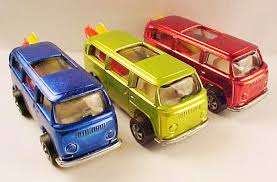

|
Hot Wheels top 1: Pink, Rear-Loading Beach Bomb (1969) |
|
|
TOP 1: Pink, Rear-Loading Beach Bomb (1969).
Ampliamente anunciada como la combi de Hot Wheels más coleccionada que existe, la Beach Bomb de carga trasera es un prototipo que durante años permaneció en poder de un empleado de Mattel. Única en que sus tablas de surf se cargan a través de la ventana trasera, demostrando ser demasiado estrecha y pesada, por lo que el diseño fue reemplazado por una versión ligeramente diferente que incluía tablas de surf de montaje lateral y un techo solar de plástico para un menor centro de gravedad. Aunque algunas copias adicionales en diferentes colores lograron deslizarse en manos del público en general, solo se sabe que existen dos versiones Pink. Valor: $ 150,000 sueltos  |
||